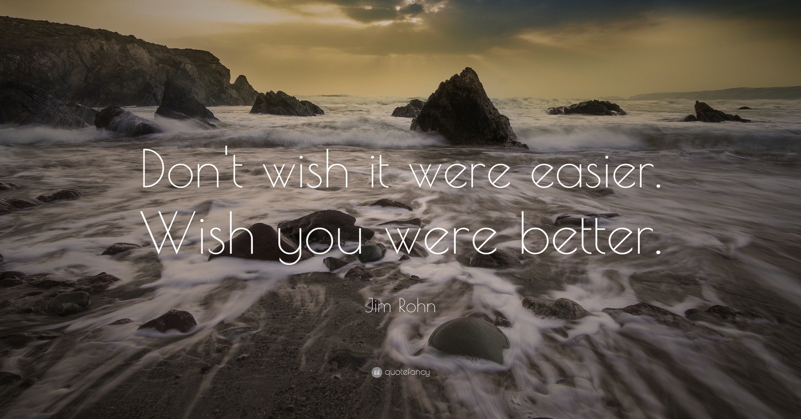

Mindset & Wellness
5 Tips for Developing Your Wellness Philosophy

I'm here in hopes to inspire you into an attitude of self-love. My body was stressed out at 19 and stress free by 24. How does a country boy from Wisconsin get into the best shape of his life? This is how...
At 19, my body was riddled with injuries and inflammation (stress) and I needed my body to feel better if I was going to provide for the people I care about, including my future self. As I was trying to figure out the best way to go about this process, I got some help from my grandfather (a.k.a. - Gramps), a successful salesman in the home security and GPS industries. I had already been mentored from a young age by Gramps, but with a proud grin on his face he sat me down with a pen and paper one day and told me to take some notes. I still have them. The page is titled, "Life Tips to Smooth the Way," and I'd like to share a few of these notes with you. He gave me some information that radically changed my life and the way I think about what it means to live a healthy lifestyle.
You can always blow off some steam by working out every day for the rest of your life, but if you do not own your actions, the opinions of others will most likely drag you down. So as you take on this journey of self-love, remember to:
- Don't make decisions on emotion.
There is no excuse but your own if you choose not to take care of yourself and end up with injuries/stress and random, annoying bodily issues that take away time from what you wish to do with your life. The way I see it, it's survival of the... fittest -- you already know.
You can be in shape, or you can be out of shape. You can be stress free, or you can be stressed out. You can ride out the day with a grateful attitude, or you can slump into the corner of your couch and take out your frustration on the people closest to you. The major difference is the way we perceive how we feel and what we are capable of. If you believe a goal is out of reach for you because you think you're out of shape or you "don't have time", then that will surely be true for you. I'm here to let you know that nothing will change for you with this unhealthy mindset. However, if you think about it, all you have to do is make some small changes on a daily basis that will help get you closer to your goals. Stay committed to those changes, and your life will drastically change for you in a positive way.
2. Be honest with yourself.
Jim Rohn, a famous business philosopher, always used to say, "Leaders must not be naive. I used to say, ‘Liars shouldn't lie.’ What a sad waste of words that is! I found out liars are supposed to lie. That's why we call them liars -- they lie! What else would you expect them to do?"
The good news is people can change. If things aren't going well for you, I'd say now is a good time to look in the mirror and ask yourself if you are one of these people. It's one thing to lie to another human. It's entirely different when you lie to yourself. Begin to be honest with yourself by doing the things you told yourself you were going to do yesterday, or last week, or last year because chances are those things are still important to you today. Don't fly past the things that should be done any longer. When your time is free, do it now!
3. The little things separate you from the pack.
Everybody uses the same 24 hours in a day. How you allocate your 24 hours each day here on Earth is up to you. It won't hurt anybody to work from 9am to 5pm, do some chores after work and call it quits for the day. However, you can add some extra value to your day by making time for health and what you're trying to do with your life/body. It's also important for you to let people know that your time is very valuable, and it should be that way for both parties so it becomes a win-win situation if these higher priorities are interrupted.
If you were to go off and do something that you don't even want to do because your "friends" think it's a good idea, who is the real winner here? I've had to cut out a few bad habits and people in my life that were not serving me over the past couple years, and it's been one of the best decisions I've made for myself. I feel more at ease with my body and mind, I have created more time for myself and what I wish to do, and I've surrounded myself with people that have similar interests as I do. Countless studies say you are the average of the 5 people you interact with most. I'm a strong believer in that, and you should be too. Cutting out bad habits and bad people may turn out to be the biggest opportunity you can give to your future self.
4. Have a 30,000 foot view.
I'll give you my personal 30,000 foot view to make this one easier for you to understand. Picture yourself riding in an airplane looking down at the Earth from 30,000 feet in the air. After all, things might not be clear for you to see when your mind is stuck in the box of everyday living down at ground level, whatever that may be for you. Life can even be a little stressful at times, but in the grand scheme of things we're all in this together, which is beautiful when you really think about it. If people can help each other by acting in truth and have respect for one another, rather than selfish greed, the world would be a much happier place for most people.
As a personal trainer, I like to think I'm changing the world one human at a time. If I can help even one person realize that their past is not always what determines their future, that's a win for the day in my book of morals. It's important to take a step back sometimes and re-evaluate what may not be working for you, and simply change it to be morally correct for yourself, including everyone else around you. Isn't it fantastic? Everybody wins!
5. Seek spirituality and what it can do for you.
Meditation, mindfulness, yoga, spirituality, buddha, religion, god, whatever you want to call it... It's always good to have some kind of avenue to escape in your own mind when life gets difficult. Nobody ever did anything worthwhile without hard work and a little help from some higher power than themselves. The struggle of life is super real, it's always been real, and it always will be real. So there has to be some amount of faith at the beginning of each day that says, "It's going to be okay." Stressing out over the little things that happen to everyone in life is not worth it. That's just my opinion, but I hope you'd agree.
Breathing in, we realize how beautiful this body that encompasses our life truly is as our lungs work to absorb the oxygen that allows us to live in this very moment. Breathing out, we become grateful.